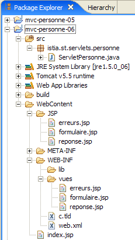

11. Web application MVC [personne] – version 6
11.1. Introduction
In this version, we are making the following change:
The previous version did not use a session to store data between client/server exchanges. It used cookies, which means that the data to be stored is sent to the client by the server so that the client can send it back during the next exchange. In this new version, we use a similar technique: hidden fields in forms. There are differences between these two techniques:
Cookies | Hidden fields |
- The server places the elements to be stored in the HTTP stream that precedes the HTML document. | - The server places the items to be stored in the HTML document. |
- This technique requires the browser to accept cookies so that it can send them back to the server during its GET or POST requests. | - The technique requires that all client requests to the server be POST so that the hidden fields are sent to the server. |
- The user can access the stored data by viewing the cookies received by their browser. Most browsers offer this feature. | - The user can access the stored data by viewing the source code of the received document. |
The hidden field technique can be used here because all client requests are of type POST.
11.2. The Eclipse Project
To create the Eclipse project [mvc-personne-06] for the web application [/personne6], duplicate the project [mvc-personne-05] by following the procedure described in section 6.2.
 |  |
11.3. Configuring the [personne6] Web Application
The web.xml file for the /personne6 application is as follows:
<?xml version="1.0" encoding="UTF-8"?>
<web-app id="WebApp_ID" version="2.4"
xmlns="http://java.sun.com/xml/ns/j2ee"
xmlns:xsi="http://www.w3.org/2001/XMLSchema-instance"
xsi:schemaLocation="http://java.sun.com/xml/ns/j2ee http://java.sun.com/xml/ns/j2ee/web-app_2_4.xsd">
<display-name>mvc-personne-06</display-name>
...
This file is identical to that of the previous version except for a few details:
- line 6: the display name of the web application has changed to [mvc-personne-06]
The [index.jsp] home page is identical to that of the [/personne5] application:
<%@ page language="java" contentType="text/html; charset=ISO-8859-1"
pageEncoding="ISO-8859-1"%>
<%@ taglib uri="/WEB-INF/c.tld" prefix="c" %>
<c:redirect url="/do/formulaire"/>
11.4. The view code
Only the [réponse, erreurs] views change. They now have hidden fields in their respective forms, whereas in the previous version, these forms did not post any parameters.
[réponse.jsp]:
...
<html>
...
<body>
...
<form name="frmPersonne" action="retourFormulaire" method="post">
<input type="hidden" name="nom" value="${nom}">
<input type="hidden" name="age" value="${age}">
</form>
<a href="javascript:document.frmPersonne.submit();">
${lienRetourFormulaire}
</a>
</body>
</html>
- lines 6-9: the form that will be submitted to the server when the link in lines 10-12 is clicked
- line 6: the target of POST will be [/do/retourFormulaire]
- lines 7-8: the hidden fields [nom] and [age] will be posted. Their values ${name} and ${age} will be set by the controller that displays [réponse.jsp]. These will be the values entered in the form.
[erreurs.jsp]:
...
<html>
...
<body>
...
<form name="frmPersonne" action="retourFormulaire" method="post">
<input type="hidden" name="nom" value="${nom}">
<input type="hidden" name="age" value="${age}">
</form>
<a href="javascript:document.frmPersonne.submit();">
${lienRetourFormulaire}
</a>
</body>
</html>
The changes and explanations are the same as for view [réponse.jsp]. Note that the template for view [erreurs] has been enhanced with two new elements, [nom, age], which are added to the two that already existed: [erreurs, lienRetourFormulaire].
Readers are invited to test these new views using the same approach as in previous versions.
11.5. The [ServletPersonne] controller
The [ServletPersonne] controller for the [/personne6] web application is very similar to that of the previous version. The changes stem from the fact that the [erreurs] view model has changed. Two additional elements must be added: [nom, age]. Only the methods that display this view are affected. These are the methods [doGet] and [doValidationFormulaire].
11.5.1. The method [doGet]
The code for [doGet] is as follows:
In fact, this code remains identical to what it was. In the previous version, the elements [nom, age] were not included in the [erreurs] view template. If we continue to omit them, the variables ${name} and ${age} from [erreurs.jsp] will be replaced by an empty string. This is fine, because in this specific case, the link [Retour au formulaire] is not displayed to the user. In fact, we also do not include the [lienRetourFormulaire] element in the template. The ${lienRetourFormulaire} variable from [erreurs.jsp] will be replaced by an empty string. Therefore, there will be no link, so it will not be possible to submit the hidden fields [nom, age] from the [erreurs.jsp] form. The value of these fields may therefore be the empty string.
11.5.2. The [doValidationFormulaire] method
Its code is as follows:
Lines 8–10: We insert the [nom, age, lienRetourFormulaire] elements into the template. We know that the method displays one of the views [réponse] or [erreurs]. The latter will therefore have the elements [nom,age] in its model.
11.6. Tests
Start or restart Tomcat after integrating the Eclipse project [personne-mvc-06], then request url and [http://localhost:8080/personne6].